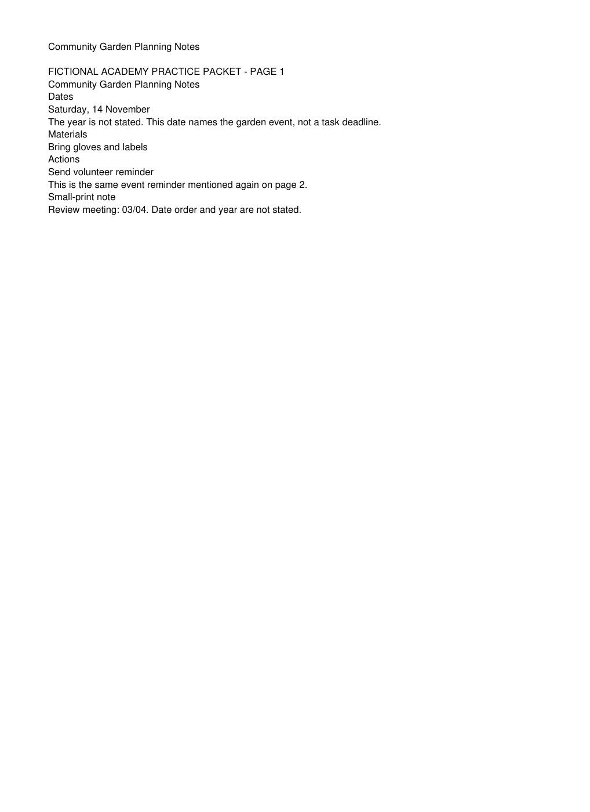
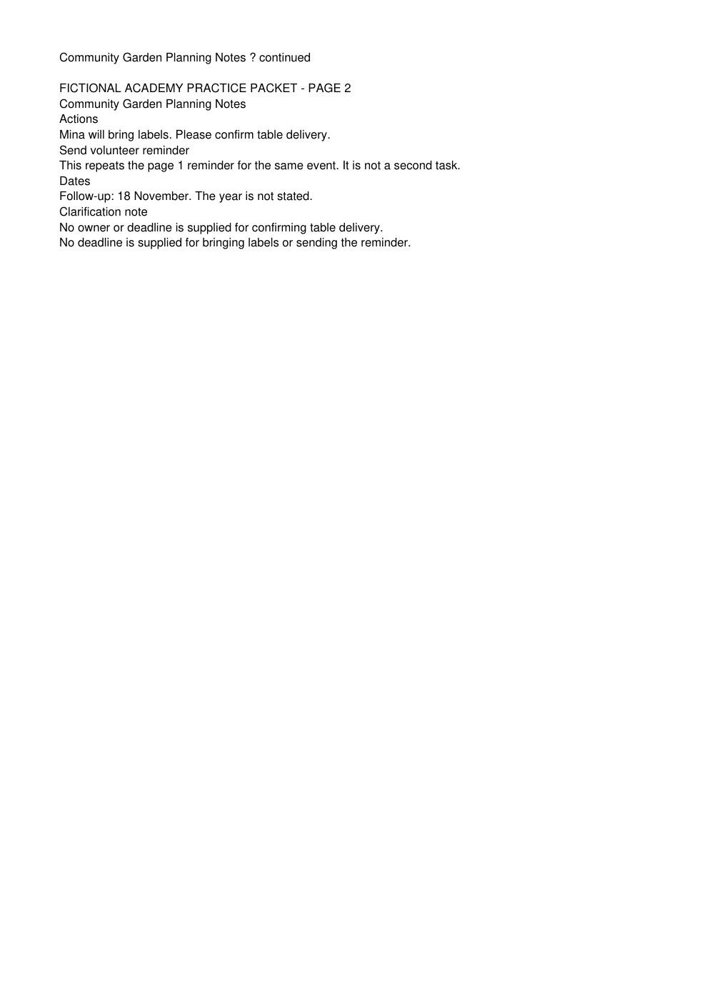

<!doctype html><html lang=en><meta charset=utf-8><title>Academy Source Notebook — Lesson 106</title><style>*{box-sizing:border-box}body{margin:0;background:#edf2f7;color:#172c40;font:20px Arial,sans-serif}main{width:1920px;min-height:1080px;padding:36px 60px}header{border-bottom:3px solid #237b75;padding-bottom:18px;display:flex;justify-content:space-between;align-items:center}h1{font-size:34px;margin:0}h2{font-size:29px;margin:14px 0}h3{font-size:25px}p{line-height:1.4}button,input,textarea{font:inherit}button{border:1px solid #b5c4d0;border-radius:7px;background:white;color:#153b54;padding:10px 18px;cursor:pointer;margin:4px}button:hover{background:#def1ec}.label{font-size:17px;color:#456274}.tag{padding:8px 12px;border-radius:7px;background:#dceee8;color:#145b49;display:inline-block}.warn{background:#fff0c4;color:#714600;padding:14px;border-left:5px solid #c88f16}.grid{display:grid;grid-template-columns:750px 1fr;gap:28px;margin-top:24px}.card{background:white;border:1px solid #cbd6df;border-radius:12px;padding:24px}.source{white-space:pre-wrap;font-size:24px;line-height:1.55;margin-top:14px}.source mark{background:#ffec7d}table{border-collapse:collapse;width:100%;font-size:21px}th,td{border:1px solid #b9cad6;padding:12px;text-align:left;vertical-align:top;line-height:1.35}th{background:#e2eef4}td button{padding:3px 7px;font-size:19px}textarea{width:100%;padding:12px;border:1px solid #a6bac9;border-radius:7px;line-height:1.5;min-height:175px}input{padding:10px;width:100%;border:1px solid #a6bac9}pre{white-space:pre-wrap;font-family:Arial;line-height:1.5}footer{font-size:16px;color:#516878;margin-top:20px}.flow{display:flex;flex-direction:column;align-items:center;gap:20px;margin-top:65px}.flow b{padding:24px;border:2px solid #237b75;background:#eef8f4;border-radius:10px;font-size:34px}.wide{margin-top:24px}.selected{background:#fff7d3}.small{font-size:17px}.grid table{font-size:18px}.grid th,.grid td{padding:9px}.proof{border:1px solid #b9cad6;padding:12px;background:#eff8f4}.check{font-size:29px;line-height:2}</style><main></main><script>const D={"pages": ["FICTIONAL ACADEMY PRACTICE PACKET - PAGE 1\nCommunity Garden Planning Notes\nDates\nSaturday, 14 November\nThe year is not stated. This date names the garden event, not a task deadline.\nMaterials\nBring gloves and labels\nActions\nSend volunteer reminder\nThis is the same event reminder mentioned again on page 2.\nSmall-print note\nReview meeting: 03/04. Date order and year are not stated.\n\n", "\n\nFICTIONAL ACADEMY PRACTICE PACKET - PAGE 2\nCommunity Garden Planning Notes\nActions\nMina will bring labels. Please confirm table delivery.\nSend volunteer reminder\nThis repeats the page 1 reminder for the same event. It is not a second task.\nDates\nFollow-up: 18 November. The year is not stated.\nClarification note\nNo owner or deadline is supplied for confirming table delivery.\nNo deadline is supplied for bringing labels or sending the reminder.\n"], "rows": [{"Type": "List", "Exact wording": "Bring gloves and labels", "Original date": "", "Normalized date": "", "Owner": "Not stated", "Deadline": "Not stated", "Source": "page 1 / Materials", "Review": "Checked"}, {"Type": "Date", "Exact wording": "Saturday, 14 November", "Original date": "Saturday, 14 November", "Normalized date": "Not normalized: year absent", "Owner": "Not stated", "Deadline": "Not stated", "Source": "page 1 / Dates", "Review": "Needs clarification"}, {"Type": "Action", "Exact wording": "Mina will bring labels.", "Original date": "", "Normalized date": "", "Owner": "Mina", "Deadline": "Not stated", "Source": "page 2 / Actions", "Review": "Checked"}, {"Type": "Action", "Exact wording": "Please confirm table delivery.", "Original date": "", "Normalized date": "", "Owner": "Not stated", "Deadline": "Not stated", "Source": "page 2 / Actions", "Review": "Checked"}, {"Type": "Action", "Exact wording": "Send volunteer reminder", "Original date": "", "Normalized date": "", "Owner": "Not stated", "Deadline": "Not stated", "Source": "pages 1 and 2 / Actions", "Review": "Checked: one repeated action"}, {"Type": "Date", "Exact wording": "Review meeting: 03/04.", "Original date": "03/04", "Normalized date": "Not normalized: order and year absent", "Owner": "Not stated", "Deadline": "Not stated", "Source": "page 1 / Small-print note", "Review": "Needs clarification"}, {"Type": "Date", "Exact wording": "Follow-up: 18 November.", "Original date": "18 November", "Normalized date": "Not normalized: year absent", "Owner": "Not stated", "Deadline": "Not stated", "Source": "page 2 / Dates", "Review": "Needs clarification"}], "prompt": "Using only the supplied document, extract every list item, date, and action item. For each row, include type, exact wording, source page or section, owner, deadline, and review status. If the document does not state an owner or deadline, write “Not stated.” Do not infer relationships. Preserve original dates; any normalized date belongs in a separate field. Do not invent missing years or date ordering. Mark generated rows unverified until compared with the source.\n", "actual": {"data": {"rows": [{"Type": "Date", "Exact wording": "Saturday, 14 November\nThe year is not stated. This date names the garden event, not a task deadline.", "Original date": "Saturday, 14 November", "Normalized date": "Not normalized: year is not stated.", "Owner": "Not stated", "Deadline": "Not stated", "Source": "Page 1, Dates", "Review": "Unverified"}, {"Type": "List", "Exact wording": "Bring gloves and labels", "Original date": "", "Normalized date": "", "Owner": "Not stated", "Deadline": "Not stated", "Source": "Page 1, Materials", "Review": "Unverified"}, {"Type": "Action", "Exact wording": "Send volunteer reminder", "Original date": "", "Normalized date": "", "Owner": "Not stated", "Deadline": "Not stated", "Source": "Page 1, Actions; Page 2, Actions", "Review": "Unverified"}, {"Type": "Date", "Exact wording": "Review meeting: 03/04. Date order and year are not stated.", "Original date": "03/04", "Normalized date": "Not normalized: date order and year are not stated.", "Owner": "Not stated", "Deadline": "Not stated", "Source": "Page 1, Small-print note", "Review": "Unverified"}, {"Type": "Action", "Exact wording": "Mina will bring labels.", "Original date": "", "Normalized date": "", "Owner": "Mina", "Deadline": "Not stated", "Source": "Page 2, Actions", "Review": "Unverified"}, {"Type": "Action", "Exact wording": "Please confirm table delivery.", "Original date": "", "Normalized date": "", "Owner": "Not stated", "Deadline": "Not stated", "Source": "Page 2, Actions; Page 2, Clarification note", "Review": "Unverified"}, {"Type": "Date", "Exact wording": "Follow-up: 18 November. The year is not stated.", "Original date": "18 November", "Normalized date": "Not normalized: year is not stated.", "Owner": "Not stated", "Deadline": "Not stated", "Source": "Page 2, Dates", "Review": "Unverified"}]}, "model": "combo/planning"}};let scene=Number(new URLSearchParams(location.search).get('scene')||1),currentPage=1;const el=id=>document.getElementById(id),esc=s=>String(s??'').replace(/[&<>"]/g,c=>({'&':'&amp;','<':'&lt;','>':'&gt;','"':'&quot;'}[c]));function source(page,highlight=''){currentPage=page;const text=esc(D.pages[page-1].trim());el('page-label').textContent='Page '+page+' of 2';el('source-text').innerHTML=highlight?text.replace(esc(highlight),'<mark>'+esc(highlight)+'</mark>'):text;}function sourceCard(){return `<section class=card><h2>Community Garden Planning Notes</h2><div><button onclick="source(1)">Page 1</button><button onclick="source(2)">Page 2</button><a href="community-garden-planning-notes.pdf" target=_blank>Open original PDF</a></div><span id=page-label class=tag>Page 1 of 2</span><div id=source-text class=source></div></section>`}function table(rows){let cols=['Type','Exact wording','Original date','Normalized date','Owner','Deadline','Source','Review'];return '<table><thead><tr>'+cols.map(c=>'<th>'+c+'</th>').join('')+'</tr></thead><tbody>'+rows.map(r=>'<tr>'+cols.map(c=>'<td>'+esc(r[c]||'—')+'</td>').join('')+'</tr>').join('')+'</tbody></table>'}function applyDecision(){el('decision').value='Merge; retain both source locations';el('reason').value='Both pages explicitly describe the same event reminder'}function attach(e){const f=e.target.files[0];if(f){el('attachment').textContent=f.name+' · selected locally — not uploaded';el('attachment').dataset.bytes=f.size;}}function cite(){source(2,'Please confirm table delivery.');el('citation-proof').textContent='Opened page 2 / Actions: source supports the action, not Mina as owner.';}function loadActual(){if(!D.actual){el('model-output').textContent='Actual response not yet loaded';return}el('model-output').textContent=JSON.stringify(D.actual.data,null,2);}let body='';if(scene<=6){body='<div class=grid>'+sourceCard()+'<section class=card><h2>Two-page practice packet</h2><p>Fictional Academy source • permission-cleared</p><h3>Dates • Actions • Materials</h3><p>Read both pages before accepting extracted records.</p><p class=warn>No year or date-order convention is supplied.</p></section></div>'}else if(scene<=13){body='<div class=grid>'+sourceCard()+'<section class=card><h2>Traceable extraction</h2><div class=flow><b>Source page</b><span>↓</span><b>Extracted row</b><span>↓</span><b>Checked result</b></div></section></div>'}else if(scene<=19){body='<section class="card wide"><h2>Document-capable Academy assistant</h2><p class=label>Self-created course workspace. One recorded real model response; no vendor interface imitation.</p><label>Select the local practice PDF (no upload) <input id=pdf-upload type=file accept="application/pdf" onchange="attach(event)"></label><p id=attachment class=tag>Choose the actual local PDF</p><p class=warn>Selecting a file or editing this prompt does not run inference or change the fixed recorded response.</p><h3>Extraction instruction</h3><textarea id=prompt>'+esc(D.prompt)+'</textarea><button onclick="loadActual()">Open recorded actual response</button><pre id=model-output class=small></pre></section>'}else if(scene<=24){body='<section class="card wide"><h2>Extracted records • source-linked check table</h2><p class=label>Actual recorded model extraction. Generated rows remain unverified until checked against the original PDF.</p>'+table((D.actual?.data?.rows||D.rows).filter(r=>r["Exact wording"].includes("Bring gloves and labels")||r["Original date"]==="Saturday, 14 November"||r["Exact wording"]==="Please confirm table delivery."))+'<button onclick="loadActual()">Inspect actual assistant response</button><pre id=model-output class=small></pre></section>'}else if(scene<=29){body='<div class=grid>'+sourceCard()+'<section class=card><h2>Source-location check</h2>'+table((D.actual?.data?.rows||D.rows).filter(r=>r["Exact wording"].includes("Bring gloves and labels")||r["Original date"]==="Saturday, 14 November"||r["Exact wording"]==="Please confirm table delivery."))+'<button id=cite onclick="cite()">Open table-delivery citation: Page 2 / Actions</button><p id=citation-proof class=proof>Open the citation and inspect its passage.</p><h3>Page thumbnails</h3><button onclick="source(1)"><br>Page 1</button><button onclick="source(2)"><br>Page 2</button></section></div>'}else if(scene<=36){body='<div class=grid>'+sourceCard()+'<section class=card><h2>Reverse check: source → table</h2><table><tr><th>Source page</th><th>Passage</th><th>Review</th></tr><tr><td>Page 1</td><td>Review meeting: 03/04.</td><td>Ambiguous: date order and year absent</td></tr><tr><td>Page 2</td><td>Send volunteer reminder</td><td>Duplicate mention: inspect both locations</td></tr><tr><td>Page 3</td><td>Not supplied in this packet</td><td>Not found — no third page claimed</td></tr></table><p>Checklist options: Found • Missing • Duplicate • Ambiguous • Wrong association</p><p class=warn>Only two pages are supplied. Do not invent a missing third page.</p></section></div>'}else if(scene<=41){body='<div class=grid>'+sourceCard()+'<section class=card><h2>Same action mentioned twice?</h2><table><tr><th>Exact wording</th><th>Source</th></tr><tr><td>Send volunteer reminder</td><td>Page 1 / Actions</td></tr><tr><td>Send volunteer reminder</td><td>Page 2 / Actions</td></tr></table><p>Compare the same-event context on both pages.</p><label>Decision<input id=decision aria-label=Decision></label><label>Reason<input id=reason aria-label=Reason></label><button onclick="applyDecision()">Apply checked source decision</button></section></div>'}else if(scene<=46){body='<div class=grid>'+sourceCard()+'<section class=card><h2>Association check</h2><blockquote class=source>Mina will bring labels. Please confirm table delivery.</blockquote><p class=warn>Author-prepared deliberate error: table-delivery owner = Mina</p><h3>Owner not supported</h3><table><tr><th>Action</th><th>Corrected owner</th><th>Deadline</th></tr><tr><td>Mina will bring labels.</td><td>Mina</td><td>Not stated</td></tr><tr class=selected><td>Please confirm table delivery.</td><td>Not stated</td><td>Not stated</td></tr></table></section></div>'}else if(scene<=51){body='<div class=grid><section class=card><h2>Original page 2 image</h2></section><section class=card><h2>OCR comparison exercise</h2><p class=tag>Simulated teaching error — not observed OCR output</p><h3>Original printed date</h3><p style="font-size:40px">Follow-up: <mark>18</mark> November.</p><h3>Deliberately wrong OCR transcription</h3><p style="font-size:40px">Follow-up: <mark style="background:#ffd3d3">13</mark> November.</p><p>Compare with the actual page image. If unclear, retain uncertainty.</p></section></div>'}else if(scene<=55){body='<section class="card wide"><h2>Checked extraction and remaining limits</h2>'+table(D.rows)+'<p class=label>Checked means the wording/source were verified; date interpretation may still need clarification.</p><div class=proof>Action owners not stated: 2 · Confirmed repeated reminder: 1 · Unresolved possible duplicates: 0 · Dates needing clarification: 3</div><p>Checked • Needs clarification • Not found</p></section>'}else if(scene<=60){body='<div class=grid>'+sourceCard()+'<section class=card><h2>Manual extraction • editable practice row</h2><p>Copy a real packet passage and retain its location.</p><table><tr><th>Type</th><th>Exact wording</th><th>Source page</th><th>Owner</th><th>Deadline</th><th>Review</th></tr><tr><td contenteditable>Action</td><td id=manual-wording contenteditable>Please confirm table delivery.</td><td contenteditable>Page 2 / Actions</td><td contenteditable>Not stated</td><td contenteditable>Not stated</td><td contenteditable>Checked</td></tr></table></section></div>'}else{body='<section class="card wide check">✓ Every item has a type<br>✓ Dates retain original wording<br>✓ Owners are supported<br>✓ Duplicates are reviewed<br>✓ Every row returns to a source</section>'}document.querySelector('main').innerHTML='<header><h1>Academy Source Notebook</h1><span class=tag>Fictional Community Garden packet • lesson 106</span></header>'+body+'<nav class=small><a href="?scene=1">Source</a> · <a href="?scene=14">Prompt</a> · <a href="?scene=20">Extraction</a> · <a href="?scene=25">Citations</a> · <a href="?scene=30">Omissions</a> · <a href="?scene=37">Duplicates</a> · <a href="?scene=42">Associations</a> · <a href="?scene=50">OCR</a> · <a href="?scene=52">Checked table</a> · <a href="?scene=56">Manual practice</a></nav><footer>Actual functional self-created course app. Source data is fictional; author-checked examples and simulated errors are labelled. No private information or vendor UI.</footer>';if(el('source-text'))source(scene>=25&&scene<=29||scene>=42?2:1);</script></html>